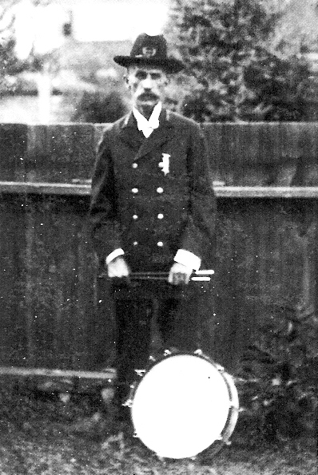

(see below for obituary of Thomas (and Lilly) Card and further information on the G.A.R.)
In 1974, I was working at the University City Fire Department and a fellow firefighter named Dave Card mentioned that his great grandfather settled in the Dogtown area in a place called Billy Goat Hill back in the 1800s. I had never heard of this Billy Goat Hill and just dismissed this comment as a friendly get to know each other conversation among workers. Dave was quite a bit older than me and had the experience as a veteran firefighter that I hoped to achieve some day. Dave was the kind of man who did his job with perfection and would never leave anyone behind. He always finished what he started! We maintained a great friendship throughout the years. We both retired from the fire department and Dave still lives in the Carlinville, Illinois area and I remained in Dogtown. Many years later this Billy Goat Hill information would be brought up and complete the legend of a young drummer boy who joined the Army of the Republic and fought in the last battles of the Civil War.
During a trip to Germany in 2004, while walking through the sleepy village of Asmanhausen, I noticed a wedge of land in the town square that contained several small grave stones with the names of the soldiers and civilians from that village who died in World War II. I thought it to be a great tribute to those veterans and villagers who lost their lives during the war.
I could picture such a memorial back home in Dogtown in a similar wedge of land at Tamm and Clayton Avenue. In 2006, I brought the idea of a Dogtown Veterans Memorial to the board of the Dogtown Historical Society and was given the green light to move forward on the project. Soon afterward, a few U. City firefighter retirees and I were in Carlinville to visit Dave Card who had contracted a rare form of cancer and was feeling poorly. After a wonderful visit at the town chili parlor, we left Dave and started back to St. Louis. I noticed a Veterans Memorial on the way out of town and stopped to visit it. The memorial stones were back granite with white lettering and it seemed to be exactly what I had envisioned for our memorial. A few weeks later, I brought back a few representatives from Dogtown to get their impression of the granite stones and the general layout of the memorial including the pavers engraved with the names of each veteran who lived in Macoupin County, Illinois. The consensus was that this would be our model for the memorial. We would have a great black granite stone with the names engraved of those soldiers killed in foreign wars while having pavers installed around the stone with the names engraved of all other veterans who lived in Dogtown.
On July 4th, 2011 at 8:00AM, Vesper Granite from Carlinville, Illinois delivered our large black granite memorial stone to the Dogtown Veterans Memorial Park at the corner of Tamm and Clayton and our Memorial dedication took place at noon. Dave Card had supplied the contact information. Just days after the Memorial dedication, Dave Card appeared at my doorstep and entered my house to discuss his admiration of the memorial the DHS had built. He had driven to St. Louis to see what kind of job his friend Steve from Vesper Granite had done for us. As we were discussing all the details concerning the memorial, I remembered our long lost conversation about his great grandfather and Billy Goat Hill. Dave verified the conversation and even mentioned that his great grandfather had fought in the Civil War. In a sense of apprehension, I asked if he knew exactly where he lived. He said that he had his address back home and would call me later. I remember thinking what kind of luck it would be to have a paver placed at our Memorial of a Civil War veteran. Dave called me and gave his great grandfather’s address and it was indeed within the boundaries of Dogtown established by our Historical Society.
Thomas Card was a young boy of 15 when he was recruited into the Army of the Republic on August 18th, 1864 and was paid a menial sum of money to join. He lied about his age and used an alias Tom Codd to avoid being found out. His application said he was a rider but he was installed as a drummer boy. He was assigned to Company B of the 40th Missouri Regiment. Before he was discharged on August 8th, 1865, he had taken part in many battles including the Battle of Franklin, the Battle of Nashville and the pursuit of General Hood. He took part in the last infantry battle of the Civil War, the assault and capture of Fort Blakely.
In the 1870s Thomas Card moved into a home at 2035 Knox and was one of the first people to move into the area known then as Billy Goat Hill. This name was derived from the many billy goats supplied by the brick companies to eat the grass around the brick pallets in the storage yards. He lived there until his death on March 1, 1912. Later in the early 1900s, he became President of the Gratiot School Association and was published in a Globe Democrat paper for his article on the deplorable conditions of the swamp lands along Manchester Avenue that is now known as the River des Peres.
In 1892, Thomas Card was granted a pension for his deteriorated medical condition by the United States. He was forced to get his commanding officers to verify that he was indeed Thomas Card with the alias of Tom Codd. This was all part of the information the government supplied to Dave Card to verify his great grandfather’s war record.
In 1996, Dave Card was instrumental in getting his name and the name of his father engraved on the stone at the Carlinville Monument. However, they would not allow his great grandfather to have his name engraved on the memorial stone because he had never resided in Macoupin County. Dave was crushed. He had previously done the necessary research to retrieve all the war records on hand but the residency issue held him back. During his research, he found out that Thomas Card was buried at St. Peters Cemetery located at 2101 Lucas and Hunt Road in St. Louis County. Dave made a trip to the cemetery but when he found his grave, he was shocked!
As a young boy, Dave would visit his grandfather Ed Card, Thomas Card’s son, living on Wabada Avenue in north St. Louis. One day he played under the front porch and it was there where he found the gravestone that had his great grandfather’s name on it. Dave found out that the government had sent this stone to his grandfather as next of kin to Thomas Card who died in 1912. After Dave’s grandfather Ed Card died, he took the stone from under the porch and kept it at his house for over 20 years. He thought it was an extra stone but something made him keep it anyway. Dave kept the stone at his Carlinville residence under a fruit tree until his wife wanted him to get rid of it. Dave’s son was also named Thomas Card and it was too hard to see her son’s name on a gravestone in the yard. Dave donated the stone to the Soldiers Memorial in downtown St. Louis.
At the cemetery, Dave looked for his great grandfather’s stone but as he found the plot of Thomas Card there was no marker on the ground. It was an unmarked grave! Dave knew what he had to do.
Dave Card went to the Soldiers Memorial, poured his heart out and within a year, he got the stone back. He then took it to Vesper Granite back home in Carlinville. He had it engraved properly and subsequently returned to the cemetery and paid St. Peters to have it set on the grave of Thomas Card. It was as though it was his duty to take care of his great grandfather. Just one thing was missing from this story. Thomas Card’s name engraved at a memorial where he lived.
On Sunday, 12:00 noon, November 13th, 2011 at the Dogtown Veterans Memorial at Tamm and Clayton a paver will be dedicated with the inscription: Thomas Card, Drummer Boy, Civil War to his great-grandfather’s memory along with pavers honoring many veterans of foreign wars who lived in Dogtown.
With the laying of this memorable paver, this story becomes a legend of a small drummer boy who went off to war and became a man.
In the words of Dave Card who will be eighty years old in March of 2012, “It’s like he reached out of the grave and made me finish this job”.
John Corbett, President, Dogtown Historical Society
The Funeral of Thomas Card, who died aged 63, at his home, 2035 Knox avenue, at 12:50 o’clock Friday afternoon, will be under the auspices of Ransom Post No. 131, G. A. R. and Maplewood Lodge No. 566, A. F. and A. M Chevalier Lodge No. 70, Knights of Pythias, from the residence of the family to St. Peter’s Cemetery at 1:30 o’clock to-morrow afternoon.
Card was an ardent Republican. During the world’s fair in St. Louis he was an inspector for the United States Government. For a number of years he was custodian of the St. Louis Courthouse.
He fought in the civil war in Company B. Fortieth Missouri Regiment. He was in the battle of _________(blacked out) and siege of Vicksburg. He attended to his duties at the Champion Shoe Machine Company, Forest Park boulevard and Spring avenue, until Wednesday evening, when he went home feeling ill. He sank rapidly.
As a baby, Card was brought to New York by his parents from Lancashire, England, his birthplace. For twenty-five years he lived on Knox avenue, being one of the first men to build there.
Nine children and six grandchildren survive him. The children are: Mrs. C. H. Lillingston of Shrewsbury, St. Louis County, Edward T. Card, Miss Violette A. Card., George G. Card, Mrs. H. C. Ferguson, Frank B. Card and Miss Gladys Card, all of St. Louis.
Obituary of Lilly Card, wife of Thomas Card - as printed in the St. Louis Post Dispatch Newspaper - January 6. 1909
On Wednesday, Jan 6, 1909 at 5 a.m. Lilly Card (nee Guenther), wife of Thomas Card, mother of Mrs. C. H. Lillingston (nee Card), Edward T., Violette A., George G., Mrs H.C. Ferguson (nee Card), Nettie A., Frank B., Mable I., and Gladys Card. Aged 57 years, 8 months and 6 days.
Funeral from family residence, 2035 Knox avenue, on Friday, Jan 8, 1909, at 1:30 p.m.
Thomas Card in the photo above is wearing the approved dress of a member of the G.A.R., The Grand Army of the Republic.
The G.A.R. was a very large organization of Union Army veterans. The G.A.R. medal on his coat is likely an attendance medal.
The G.A.R. was a veterans group similar to the American Legion. They had a large membership, annual meetings, women's auxiliary, and they functioned as a veterans and social organization.
They had lodges where many a tale was told over a cold one. The lodges had very impressive collections of artifacts from the members, and when the group faded, mostly due to members passing away, the collections were donated to historical societies.
| Bibliography | Oral history | Recorded history | Photos |
| YOUR page | External links | Walking Tour |